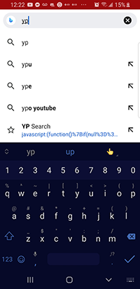

Yawning Portal Search V1.7
Description
This adds a search for to a Wizards of the Coast events page. It does not take you to an events page. You must load the events page first, then run this bookmarklet.

Browser Extensions
Using a browser extension, when you get to a page on the Yawning Portal, a search widget will automatically show on each long upcoming listings page
|
Get for Chrome |
Get for Firefox |
Bookmarklet
Bookmarklets are a way to get the same functionality on browsers that do not have a packaged extension.
Desktop browsers
- On desktop browsers, drag this link: Yawning Portal Search to your browser's bookmarks toolbar
- That's it
Mobile browsers
Mobile browsers typically do not have a "drag to toolbar" option, so, if yours does not, it is a bit longer of a process. If you have a browser that syncs bookmarks from desktop to mobile, like a Mac and a linked iPhone, you may be able to use the desktop instructions on your computer browser, and have it sync to your device. Otherwise, you need to take some steps to install manually on your mobile device:
- Create a bookmark on your browser. Name it "YP Search". The second line (the URL) can link anywhere, because youa re going to change it
- Copy all the bookmarlet code from inside this textarea
- Edit the bookmark you just created
- Paste what you copied earlier into the second line (the URL)


Usage
After it is installed, to use:
- Go to the WoTC's Yawning Portal Page
- Click on one of the links under "Register for Games Below", such as the D&D Celebration link:

- Wait for the page to load
- If you installed a browser extension, the search widget will just show up
- If you are using a bookmarklet, you will have to select the bookmarklet you installed
- Note for Chrome on Android users:

You will have to search for the bookmarklet in your address bar. In other words, if you installed it under the name 'YP Search', start typing YP, and the bookmarklet will appear as a selection. Tap on it from there. That is the only way Chrome on Android will execute a bookmarklet on a page
And see the search form above the list of events:
Happy Searching